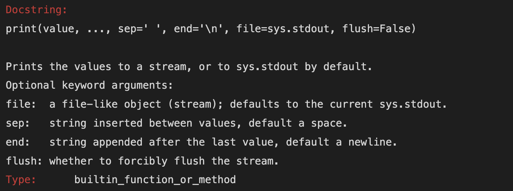
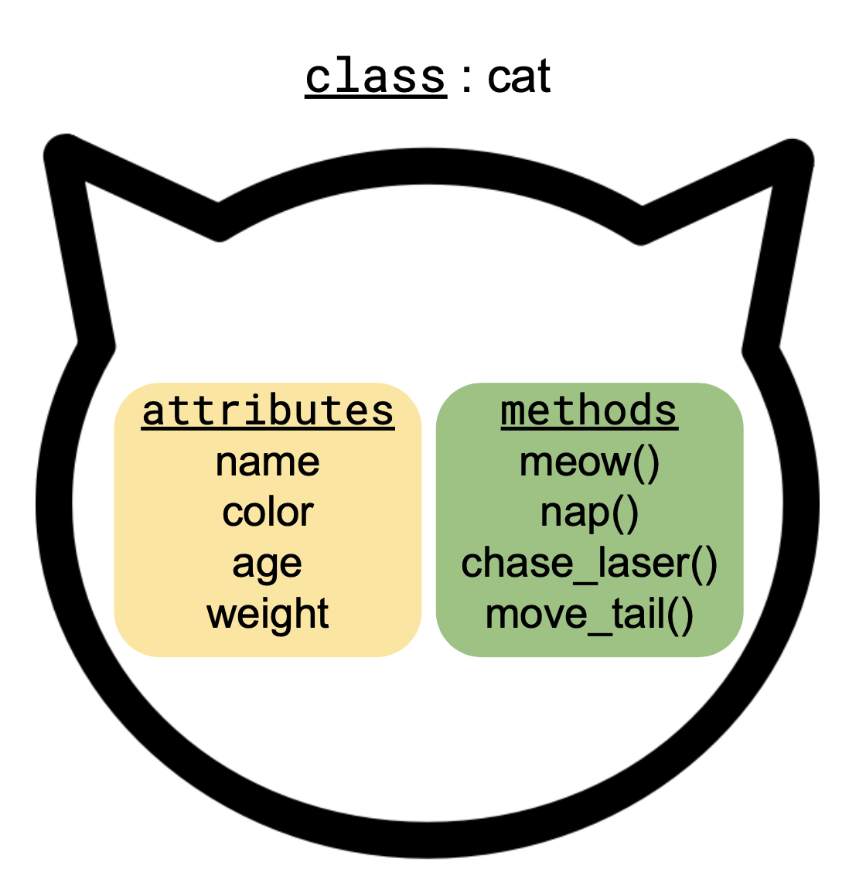

import numpy as np1 Python Review
1.1 About
This is a short reveiw about some core concepts in Python exemplified by objects in the numpy library.
1.2 numpy
NumPy is one of the core packages for numerical computing in Python. Many of the packages we will use in this course use NumPy’s arrays as their building blocks. Additionally, numpy objects have been optimized for processing, so computations on them are really fast and use less memory than doing the equivalent using base Python.
In this lesson we will use numpy to review some core concepts in Python you’re already familiar with.
First, let’s start by importing the library:
1.3 Variables
We can think of a variable as a name we assign to a particular object in Python. For example:
# assign a small array to variable a
a = np.array([[1,1,2],[3,5,8]])When we run the cell, we store the variables and their value. We can view a variable’s value in two ways:
running a cell with the variable name
using the
printfunction to print the value
# show the value
aarray([[1, 1, 2],
[3, 5, 8]])# print the value
print(a)[[1 1 2]
[3 5 8]]
R and Python
In Python we use the equal sign = to assign values to variables in the same way the left-arrow <- is used in R.
Naming Variables
There are many ways of constructing multi-word variable names. In this course we will name variables using snake_case, where words are all in small caps and separated by underscores (ex: my_variable). This is the naming convention suggested by the Style Guide for Python Code.
1.4 Variables and Objects
You will often encounter the word object in Python documentation and tutorials. Informally speaking, an object is a bundle of properties and actions about something specific. For example, an object could represent a data frame with properties such as number of rows, names of columns, and date created, and actions suchs as selecting a specific row or adding a new column.
A variable is the name we give a specific object, and the same object can be referenced by different variables. An analogy for this is the following: the Sun (object) is called “sol” in Spanish and “soleil” in French, so two different names (variables) represent the same object. You can read more technical details about the difference between objects and variables in Python here.
In practice, we can often use the word variable and object interchangeably. I want to bring up what objects are so you’re not caught off-guard with vocabulary you’ll often encounter in the documentation, StackExchange, etc. We’ll often use the word object too (for example, in the next subsection!).
1.5 Types
Every object in Python has a type, the type tells us what kind of object it is. We can also call the type of an object, the class of an object (so class and type both mean what kind of object we have).
We can see the type/class of a variable/object by using the type function:
print(a)
type(a)[[1 1 2]
[3 5 8]]numpy.ndarrayThe numpy.ndarray is the core object/data type in the NumPy pakcage. We can check the type of an entry in the array by indexing:
print(a[0,0])
type(a[0,0])1numpy.int64
Check-in
How would you access the value 5 in the array a? Remember indexing in Python starts from 0!
Notice the type of the value 1 in the array is numpy.int64 and not just the core Python integer type int. The NumPy type numpy.int64 is telling us 1 is an integer stored as a 64-bit number. NumPy has its own data types to deal with numbers depending on memory storage and floating point precision, click here to know see all the types.
Since “everything in Python is an object” and every object has a class, we will interact with SO MANY classes in this course. Often, knowing the type of an object is the first step to finding information to code what you want!
1.6 Functions
print was our first example of a Python function. Functions take in a set of arguments, separated by commas, and use those arguments to create some output. There are several built-in funcions in Python, most of them are for interacting with the basic Python data types. You can see a list of them here.
Argument or Parameter?
We can interchangeably say arguments or parameters. You will see argument more often in the documentation.
We can ask for information about a function by executing ? followed by the function name:
?print
The first line is always the function showing all of its arguments in parenthesis. Then there is a short description of what the function does. And finally a list of the arguments and a brief explanation about each of them.
You can see there are different types of arguments inside the parenthesis. Roughly speaking, a function has two types of arguments:
non-optional arguments: arguments you need to specify for the function to do something, and
optional arguments: arguments that are pre-filled with a default value by the function, but you can override them. Optional arguments appear inside the parenthesis () in the form
optional_argument = default_value.
Example:
end is an argument in print with the default value a new line. We can change this argument so that finishes the line with ^_^ instead:
# notice we had always used print withough specifying any value for the `end` argument
print('I am changing the default end argument of the print function', end=' ^_^')I am changing the default end argument of the print function ^_^1.7 Attributes & Methods
An object in Python has attributes and methods. An attribute is a property of the object, some piece of information about it. A method is a procedure associated with an object, so it is an action where the main ingredient is the object.
For example, these could be some attributes and methods a class cat:

More formally, a method is a function that acts on the object it is part of.
We can access a variable’s attributes and methods by adding a period . at the end of the variable’s name. So we would write variable.variable_method() or variable.variable_attribute.
Check-in
Suppose we have a class fish, make a diagram similar to the cat class diagram showing 3 attributes for the class and 3 methods.
Example
NumPy arrays have many methods and attributes. Let’s see some concrete examples.
# define a 3x3 array
var = np.array([[1,2,3],[4,5,6],[7,8,9]])
vararray([[1, 2, 3],
[4, 5, 6],
[7, 8, 9]])# T is an example of attribute, it returns the transpose of var
print(var.T)
print(type(var.T))[[1 4 7]
[2 5 8]
[3 6 9]]
<class 'numpy.ndarray'># shape, another attribute, tells us the shape of the array (3x3)
print(var.shape)
print(type(var.shape))(3, 3)
<class 'tuple'># ndim is an attribute holding the number of array dimensions
print(var.ndim)
print(type(var.ndim))2
<class 'int'>Notice these attributes can have many different data types. Here we saw tuples and int, two of the core Python classes, and also a numpy array as attributes of var.
Now some examples of methods:
# the tolist method returns the array as a nested list of scalars
var.tolist()[[1, 2, 3], [4, 5, 6], [7, 8, 9]]# the min method returns the minimum value in the array along an axis
var.min(axis=0)array([1, 2, 3])
Check-in
We can also call the min method without any parameters:
var.min()1What kind of parameter is axis in our previous call of the var method?
Remember, methods are functions associated to an object. We can check this!
type(var.tolist)builtin_function_or_methodtype(var.min)builtin_function_or_methodYou can see a complete list of NumPy array’s methods and attributes in the documentation.
R and Python
In R we don’t use methods within an object. Rather, functions are extrinsic to (outside) the objects they are acting on. In R, for example, there would be two separate items: the variable var and a separate function min that gets var as a parameter:
# this is R code
var <- array(c(1,4,7,2,5,8,3,6,9), dim =c(3,3))
min(var)Using the pipe operator %>% in R’s tidyverse is closer to the dot . in Python:
# this is R code
var <- array(c(1,4,7,2,5,8,3,6,9), dim =c(3,3))
var %>% min()What happens here is that the pipe %>% is passing var to the min() function as its first argument. This is essentially what happens in Python when a function is a method of a class:
# this is Python code
var = np.array([[1,2,3],[4,5,6],[7,8,9]])
var.min()When working in Python, remember that methods are functions that are part of an object and a method uses the object it is part of to produce some information.